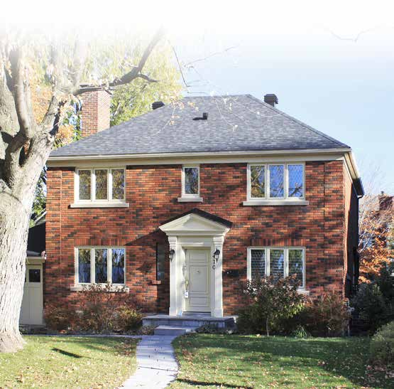

| Place | Local name | Phase years | Storeys | Roof | Window | Cladding | Garage |
|---|---|---|---|---|---|---|---|
| Saint-Lambert | The "King Cottage" Le « King Cottage » | 1930 – 1951 | 2 | gabled-or-hipped | vertical | clay-brick | none |

Two-storey detached brick cottage with several gables, a gabled entrance porch, false half-timbering and diamond-leaded casements.
| Place | Local name | Phase years | Storeys | Roof | Window | Cladding | Garage |
|---|---|---|---|---|---|---|---|
| Saint-Lambert | The "King Cottage" Le « King Cottage » | 1930 – 1951 | 2 | gabled-or-hipped | vertical | clay-brick | none |
